摘要
本案為梁某甲（未成年人）與某保險公司深圳分公司之人身保險合同糾紛。梁某甲確診Ⅰ型糖尿病後，保險公司以不符合理賠條件為由拒賠，法院認定保險公司未對疾病定義及理賠標準充分說明，判決保險公司應賠付重大疾病及少兒特定疾病理賠金共100萬元，再審申請亦遭駁回。
爭議焦點與裁判要旨
- 保險公司未充分說明Ⅰ型糖尿病定義及理賠標準，屬未盡提示義務
- 理賠條件應基於合同條款文義解釋，不得要求額外醫學鑑定
- 電子投保提供條款鏈接及回訪確認，不等同對重要條款之充分說明
- 保險責任釋義條款屬格式條款，涉及責任免除或減輕時需特別說明
法學見解
本案裁判理由核心在於保險公司對格式條款之說明義務。法院認定保險責任釋義條款（如疾病定義）屬《民法典》第496條之格式條款，涉及責任免除或減輕時，保險公司負有明確說明義務。保險公司雖提供電子條款鏈接及回訪確認，但未能證明已就『Ⅰ型糖尿病』之具體定義及理賠標準進行『足以使投保人理解其實質內容』之特別說明，故其拒賠理由不成立。此判決明確：1. 理賠條件應回歸合同條款文義，保險公司不得以額外醫學鑑定增加理賠門檻；2. 電子化投保中，單純提供鏈接不構成充分提示，須針對重要條款（如疾病定義）進行實質性解釋。對保險實務之啟示：保險公司應強化對特定疾病定義之主動、清晰說明（如以彈窗、語音、圖文等方式），避免僅依賴格式條款連結；保戶則應保存完整醫療確診記錄，並於理賠爭議時主張保險公司未盡說明義務。本案亦呼應司法實踐中對未成年人等弱勢投保人之保護傾向。

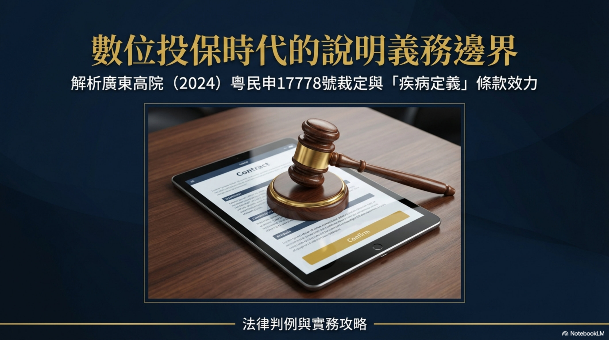
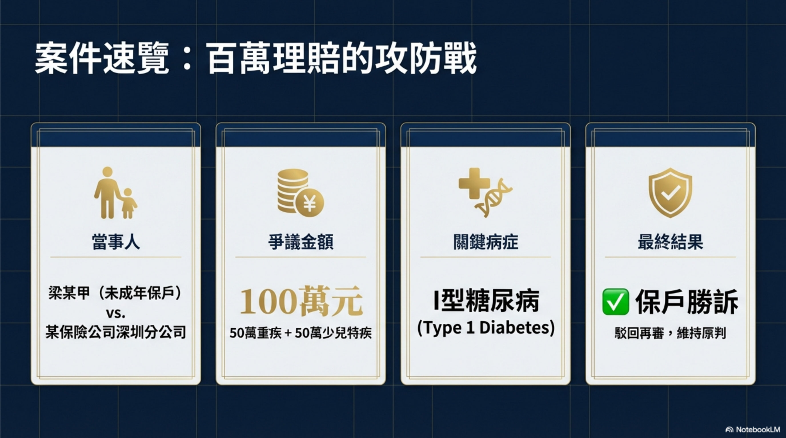
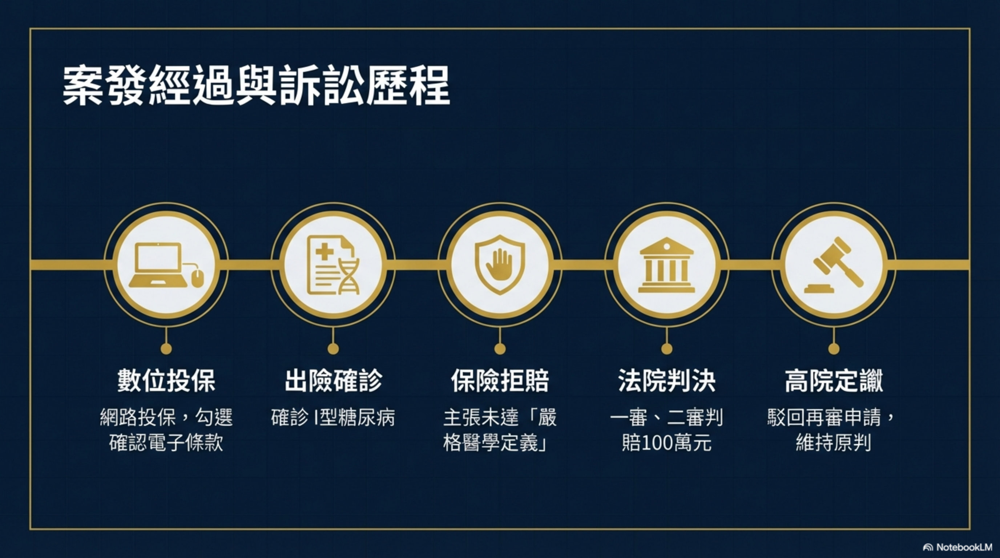
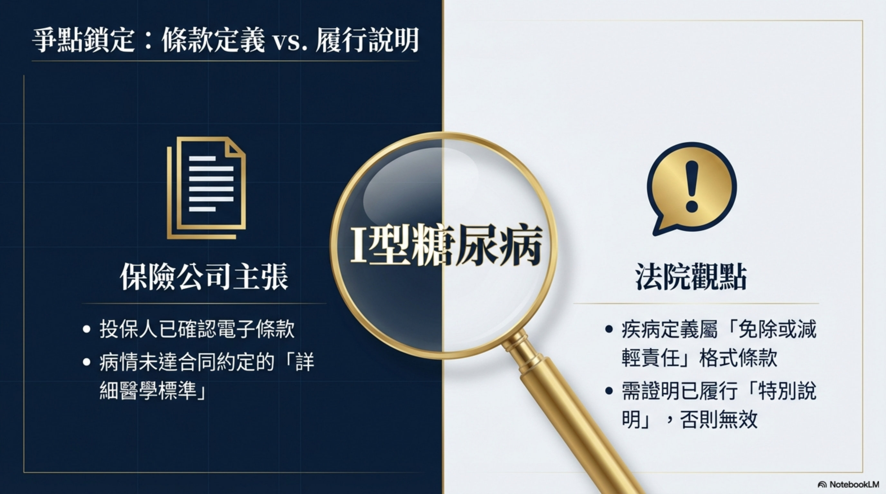
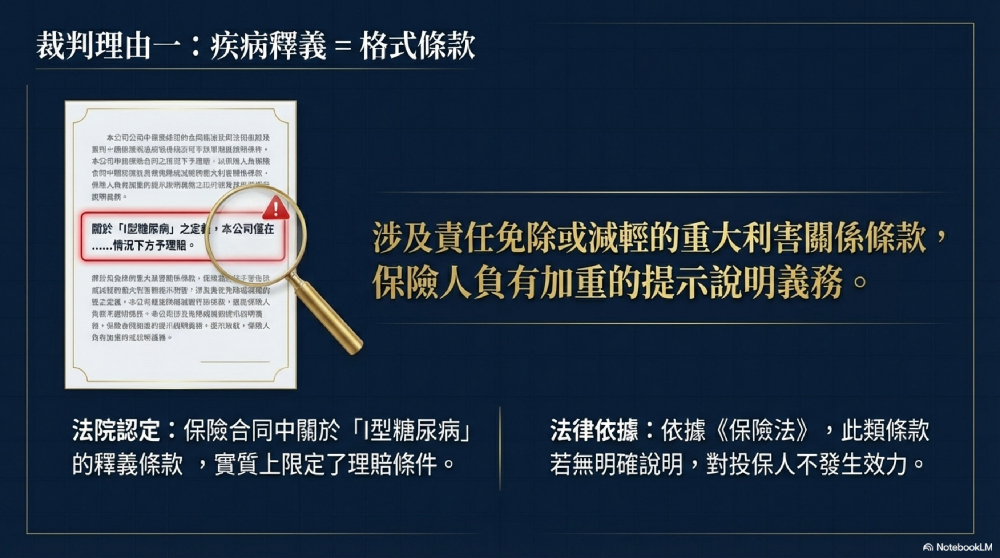
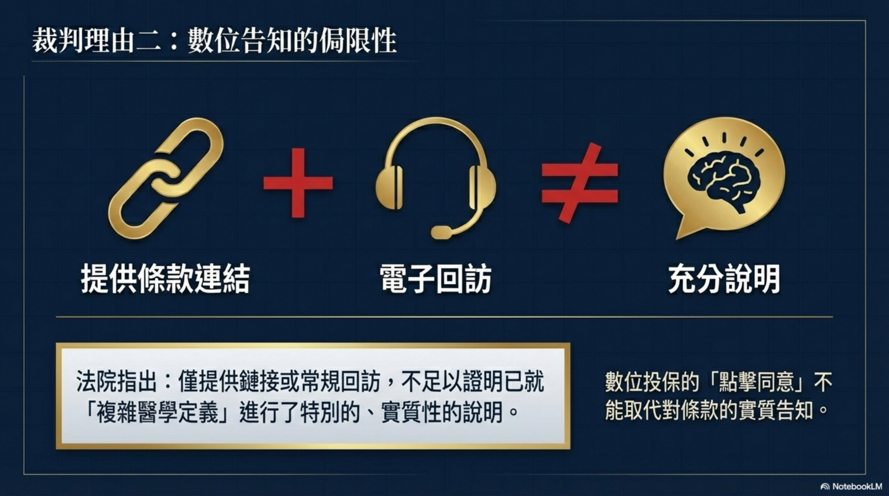
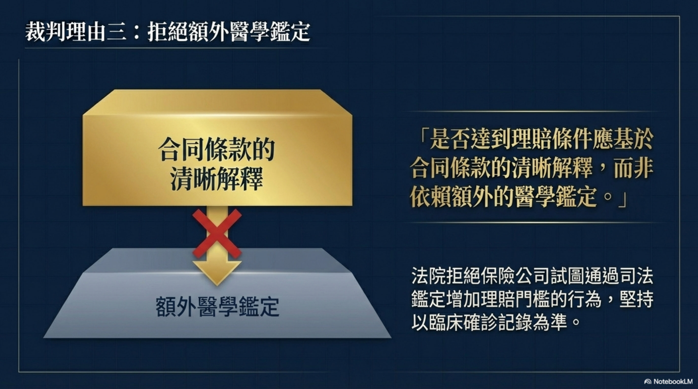
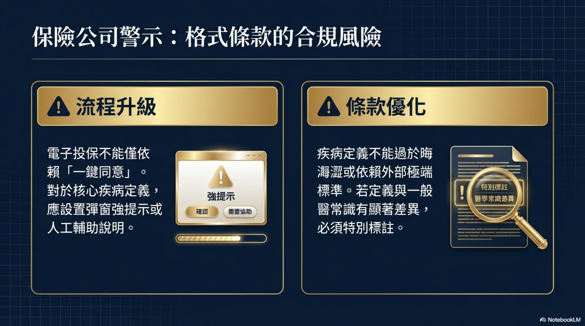
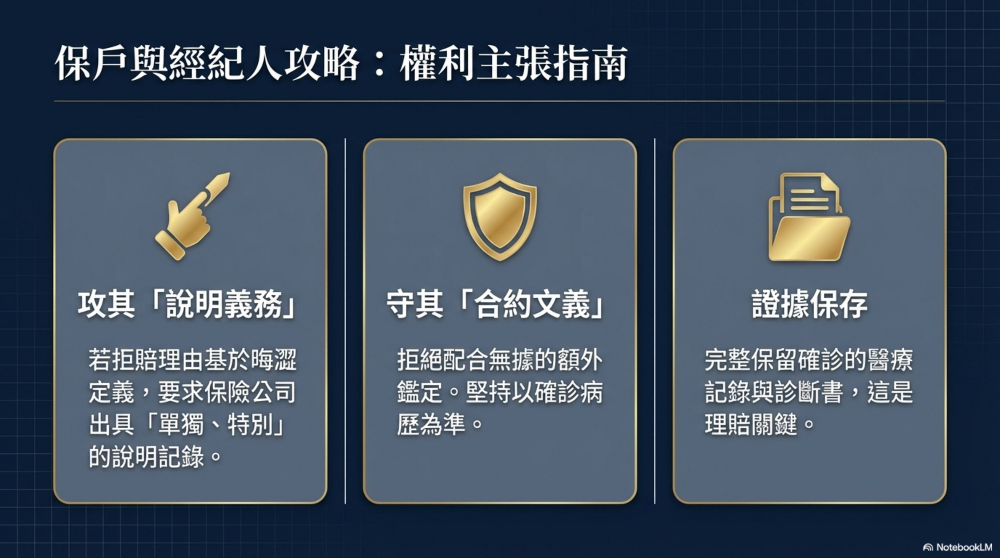
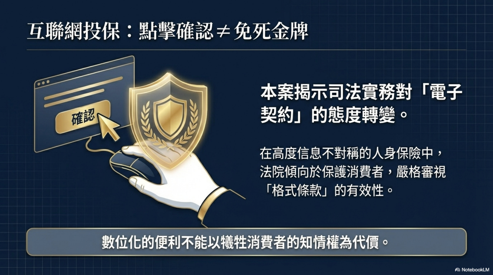
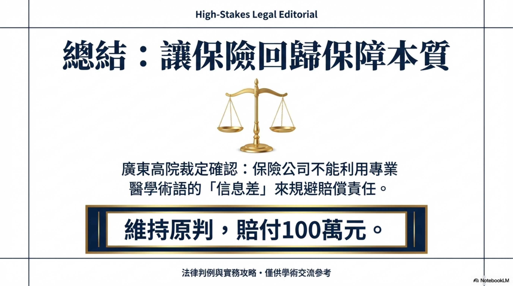
人身保險合同糾紛再審審查裁定書
基本資訊
| 項目 | 內容 |
|---|---|
| 案號 | （2024）粵民申17778號 |
| 案由 | 人身保險合同糾紛 |
| 審理法院 | 廣東省高級人民法院 |
| 審理程序 | 民事再審審查 |
| 裁判日期 | 2025-07-29 |
| 當事人 | 梁某甲（未成年人）vs 某保險公司深圳分公司 |
| 結果 | ✅ 保戶勝訴 — 駁回保險公司再審申請，維持賠付100萬元 |
案情摘要
梁某甲（2019年出生的女童）在保險期限內被確診Ⅰ型糖尿病，屬保險合同約定的重大疾病及少兒特定疾病。保險公司以「不符合理賠條件」為由拒賠。
原審法院判決保險公司賠付： - 重大疾病理賠金 50萬元 - 少兒特定疾病理賠金 50萬元 - 合計 100萬元
保險公司不服，申請再審，被廣東省高院駁回。
爭議焦點
保險公司是否對「Ⅰ型糖尿病」的具體定義和理賠標準進行了充分解釋和提示？
法院裁判理由
- 保險責任釋義條款 = 格式條款，屬於涉及責任免除或減輕的重大利害關係條款
- 保險公司雖提供了保險條款鏈接、電子回訪確認，但未能證明就「Ⅰ型糖尿病」的具體定義和理賠標準進行了特別的、足以使投保人理解其實質性內容的說明
- 是否達到理賠條件應基於合同條款的清晰解釋，而非依賴額外的醫學鑑定
- 梁某甲在保險期限內確診，保險公司拒賠理據不足
關鍵法律依據
- 《民事訴訟法》第211條、第215條第1款
實務啟示
| 要點 | 說明 |
|---|---|
| ✅ 疾病定義條款需充分說明 | 保險公司不能僅提供條款鏈接，必須對疾病的具體定義和理賠標準做特別說明 |
| ✅ 理賠條件看合同文義 | 是否符合理賠條件應依合同條款清晰解釋，不能要求額外醫學鑑定來增加門檻 |
| ✅ 電子投保的提示不等於充分說明 | 提供鏈接+電子回訪確認 ≠ 對特定重要條款的充分解釋 |
| 💡 保戶應保留確診的完整醫療記錄 | 確診記錄是理賠最關鍵的證據 |
對保戶諮詢的指導意義
- 保險公司以「不符合疾病定義」拒賠時：可主張保險公司未對疾病定義充分說明
- 保險公司要求額外醫學鑑定時：可主張應基於合同條款判斷，而非額外鑑定
- 互聯網投保：保險公司僅提供電子鏈接不構成充分提示說明